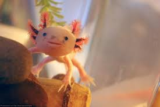
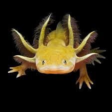
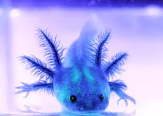

Аксолотль — диво, що живе під водою
Маленький водяний мешканець із неймовірними здібностями до відновлення. Аксолотль усе життя проводить у воді та виглядає так, ніби постійно усміхається.
Аксолотль — це рідкісний вид саламандри, який мешкає у прісній воді. На відміну від більшості амфібій, він не проходить повну метаморфозу і залишається у водній формі протягом усього життя.
-

- 
- 
- 
Про аксолотля
Аксолотль — це незвичайна водна тваринка, яку часто називають “водяним драконом”. Він є личинковою формою амфібії і все життя залишається у воді. У природі аксолотлі мешкають переважно в озерах поблизу міста Мехіко, особливо в озері Сочімілько. На жаль, у дикій природі вони перебувають під загрозою зникнення.
Аксолотль має м’яке тіло, широку голову та маленькі очі без повік. Найбільш помітна його особливість — це зовнішні зябра, які виглядають як пухнасті “гілочки” з обох боків голови. Завдяки ним він дихає у воді. Найчастіше аксолотлі мають рожевий або світлий колір, але в природі зустрічаються й темніші особини.
Ця тваринка відома своєю дивовижною здатністю до регенерації. Аксолотль може відновлювати втрачені лапки, хвіст і навіть частини серця чи мозку. Саме тому вчені активно досліджують його в лабораторіях, щоб краще зрозуміти процеси відновлення тканин.
Аксолотль харчується дрібними рибами, черв’яками та комахами. Він веде спокійний спосіб життя, повільно плаває або лежить на дні водойми. Незважаючи на свій милий вигляд, у природі це хижак, який вправно полює на здобич.

Харчування аксолотля
- Живий білковий корм
- Мотиль — один із найулюбленіших кормів аксолотля, легко перетравлюється.
- Дощові черв’яки — дуже поживні, містять багато білка для росту.
- Трубочник — підходить для молодих особин, але важливо давати перевірений корм.
- Водні організми
- Дрібна риба — у природі аксолотль може полювати на маленьких рибок.
- Рачки та личинки комах — природне джерело поживних речовин
- Спеціальний корм
- Гранули для хижих амфібій — збалансований корм, який часто використовують у домашніх умовах.
- Заморожений корм (артемія, мотиль) — зручний варіант для утримання в акваріумі.
Аксолотль (Аксолотль) є хижаком, тому основою його раціону повинна бути білкова їжа. Важливо не перегодовувати тварину та стежити за якістю корму, щоб підтримувати її здоров’я.
Цікаві факти про аксолотля
Аксолотль — амфібія, яка зберігає личинкові ознаки протягом усього життя (неотенія).
У природі мешкає в озері Сочімілько біля Мехіко та перебуває під загрозою зникнення.
Може відновлювати лапки, хвіст і навіть частини внутрішніх органів.
Назва походить із мови науатль і пов’язана з богом Шолотлем.
Аксолотлів активно використовують у наукових дослідженнях.
Аксолотль усе життя проводить у воді та дихає зовнішніми зябрами.
У природі зустрічається лише в озері Сочімілько (Мексика).
Має слабкий зір, тому орієнтується переважно на рух і запахи.
Додаткові відомості
| Характеристика | Опис / Значення |
|---|---|
| Середня довжина | 20–30 см |
| Вага | 150–300 г |
| Тривалість життя | 10–15 років (у неволі) |
| Середовище існування | Прісні водойми (озера, канали) |
| Тип харчування | Хижак (черв’яки, личинки, дрібна риба) |